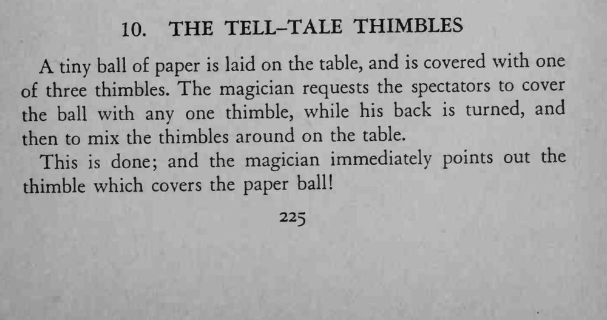
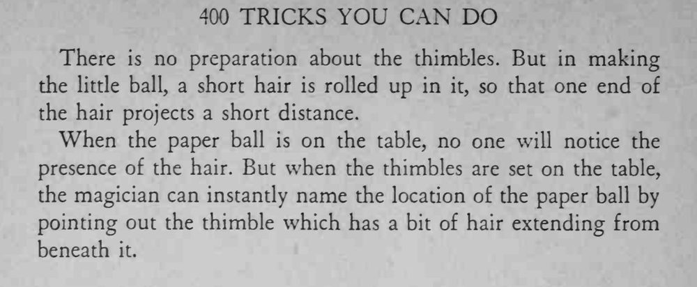

魔术师背过身去，观众把纸球扣在一只拇指套下并打乱拇指套，他回身立刻指出纸球在哪只拇指套下。
头发要短而硬、只露一点即可，打乱时让观众没法一直盯着拇指套边缘。


A tiny ball of paper is laid on the table, and is covered with one of three thimbles. The magician requests the spectators to cover the ball with any one thimble, while his back is turned, and then to mix the thimbles around on the table. This done; and the magician immediately points out the thimble which covers the paper ball! There is no preparation about the thimbles. But in making the little ball, a short hair is rolled up in it, so that one end of the hair projects a short distance. When the paper ball is on the table, no one will notice the presence of the hair. But when the thimbles are set on the table, the magician can instantly name the location of the paper ball by pointing out the thimble which has a bit of hair extending from beneath it.